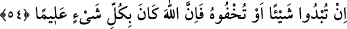

hanımları ile evlenmek “Allah katında büyük (bir günah)tır.” korkunç bir iştir. Çünkü
O Hazret’e (a.s) hayatında da vefatından sonra da hürmet etmek şarttır. Hürmeti yerine
getirme konusunda O’nun yaşaması ve vefâtı arasında fark yoktur. Çünkü hilâfet
cübbesini (makâmını) ve âhiretteki büyük şefâat elbisesini vefatından sonra O’nun
üzerine dikip giydirmişlerdir.
Her iki cihanın saltanat kaftanı şereftir,
Ama onun güzel varlığı ortada dururken (hayattayken) ortaya çıkmaz.
Ardından Allah, bu konudaki tehdidi daha da artırarak şöyle buyurdu:
54. Bir şeyi açığa vursanız da, gizleseniz de şüphe yok ki Allah, her şeyi gâyet iyi
bilmektedir.
Hz. Peygamber (s.a.)’in hanımlarını nikâhlamak gibi hayırsız “Bir şeyi” dilinizle
söyleyerek “açığa vursanız da” et-Te’vîlât’ta geçtiği üzere “kim edebi, hürmeti
muhâfazayı ve Hz. Peygamber (s.a.)’e tâzimi terk ederse” demektir.
Yahut gönüllerinizde “gizleseniz de” yâni dile getirmeseniz de -Çünkü Hz. Âişe ile
evlenmek bazı kişilerin aklından geçmişti ama dile getirmemişlerdi- Nitekim Kâşifî
böyle söylemiştir. “Şüphe yok ki Allah, her şeyi” her şeyin zâhirini ve bâtınını hakkıyla
“gâyet iyi bilmektedir.” İşte onun için sizden meydana gelen açık ve gizli günahlardan
dolayı sizi cezâlandırır.
Hz. Peygamber (s.a.)’in hanımlarıyla evlenmenin ve başka günahların dâhil olması
için Allah burada genel bir ifâde kullanmıştır.
Keşfü’l-esrâr’da der ki: “Hak Teâlâ’nın senin gizli ve âşikârını bildiğini, amellerini
ve hâllerini görüp muttali olduğunu biliyorsan, dâimâ onun kapısında ol! Amellerini
süsleyip ilme tâbi olarak helal gıda ve dâimî zikir ile sözlerinde perhizkâr ol, az konuş
ve Kur’ân okumakla meşgul ol! Özür ve tevbeye devam et, hakla nasihat et, din yolunun
tozu ve tarîkat yolunun engeli olan şeylerden uzaklaşıp ahlâkın güzel tut! Meselâ
cimrilik, riyâ, aç gözlülükten uzaklaş. Cömertlik, tevekkül ve kanâat ile süslen. Lâ ilâhe
illallah sözü her iki hâli de içine alır. Lâ ilâhe kısmı kötü ahlâka bulaşmayı red, illallah
ise güzel ahlak ile süslenmeyi ifâde eder. Bir kul “Lâ ilâhe” deyince bulaştığı ve Hak
yolunda kendisine perde ve mâni olan her ne varsa kökünden koparıp atar. Sonra
“İllallah” sözü yüz gösterir ve kulu güzel sıfatlarla süsler. Onu hazırlanmış ve süslenmiş
olarak Hz. Peygamber (s.a.)’in huzuruna götürür ki o kulu ümmetliğe kabul etsin. Eğer
“Lâ ilâhe”nin tesiri onun üzerinde görülmezse ve “ilallah”ın güzelliğini o kulun
üzerinde göremezse o kişiyi ümmeti olarak kabul etmez ve “Uzak dur” buyurur.